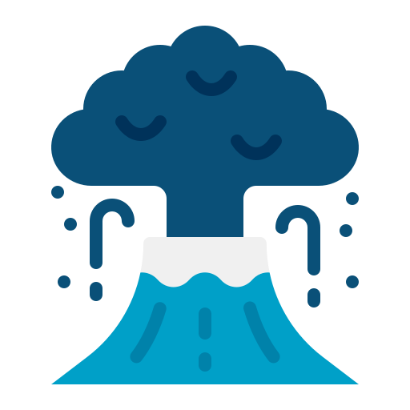
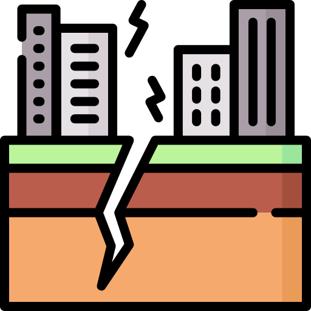
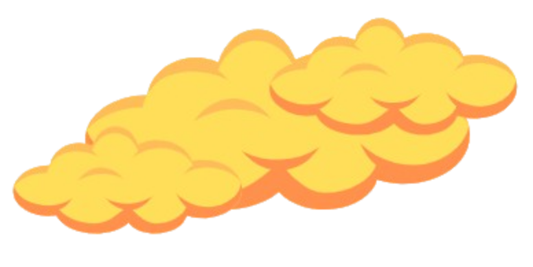
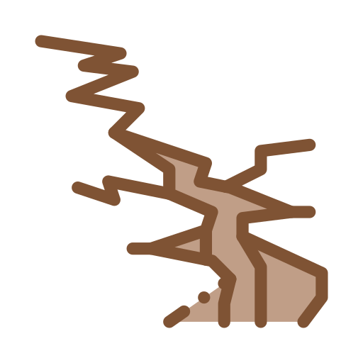
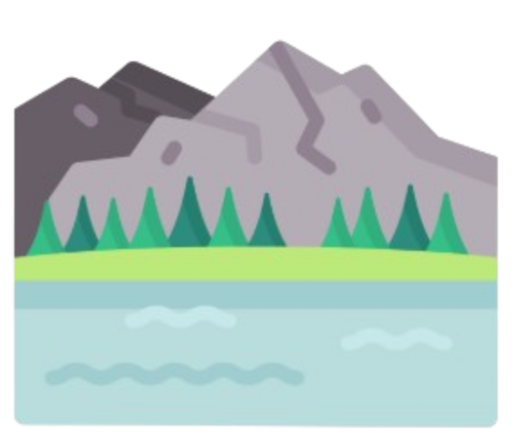

Signs That May
Indicate a Volcanic Eruption


1. Increased Smoke or Ash Emission
Stronger or darker smoke and ash clouds from the crater may signal rising volcanic activity.
Ang paglabas ng mas malakas o mas madilim na usok at abo mula sa bunganga ng bulkan
ay maaaring senyales ng papalapit na pagsabog.

2. Frequent Small Earthquakes
Series of tremors or volcanic quakes around the volcano are early warning signs.
Ang sunod-sunod na maliliit na lindol o pagyanig sa paligid ng bulkan ay maagang
babala.

3. Strong Sulfur Smell or Steam
Strong odor of sulfur or sudden increase of steam vents near the volcano may indicate magma movement.
Ang malakas na amoy ng asupre o biglaang pagtaas ng usok mula sa mga bitak ay
maaaring tanda ng pag-akyat ng magma.

4. New Cracks on the Ground
Fresh cracks or fissures forming near the volcano can signal rising pressure underground.
Ang mga bagong bitak o guwang sa lupa malapit sa bulkan ay maaaring palatandaan ng
tumataas na presyon sa ilalim.

5. Changes in Nearby Springs or Lakes
Sudden drying, discoloration, or warming of nearby water sources may indicate volcanic activity.
Ang biglaang pagkatuyo, pagbabago ng kulay, o pag-init ng mga tubig-bukal at lawa ay
maaaring senyales ng aktibidad ng bulkan.